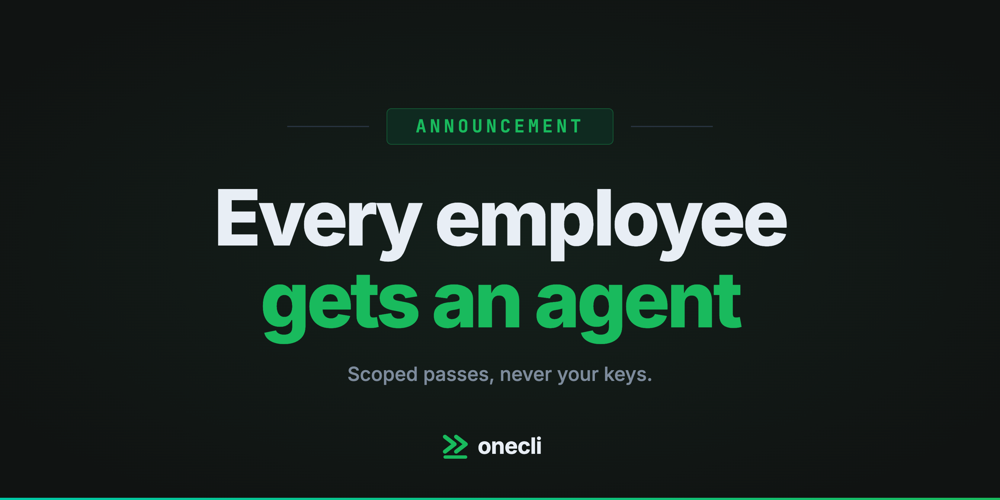
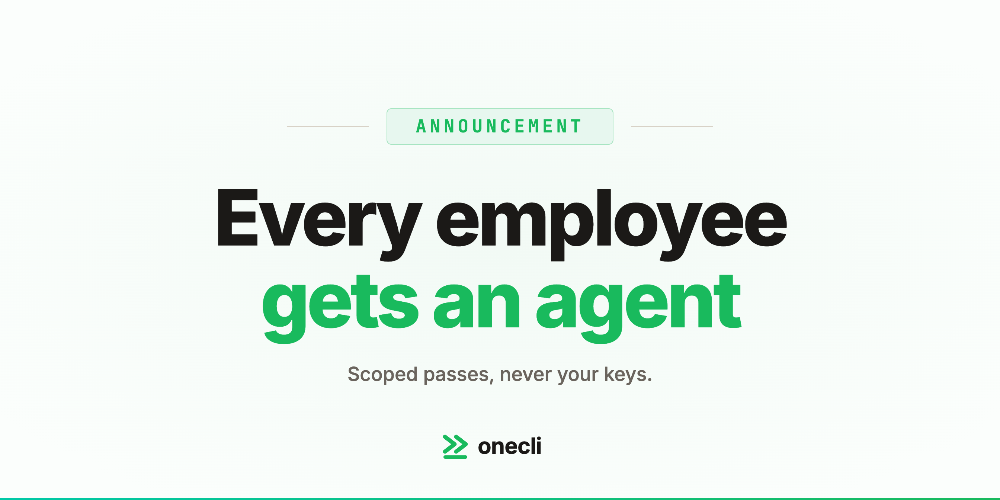

Every Employee Gets an Agent
· Jonathan Fishner

OneCLI now ships the agent, not just the layer that keeps it honest. Every employee gets their own, reachable in Slack and on the web, and the company gets one control plane to grant, watch, and revoke what all of them can touch. The short version: we spent five months building the credential layer for agents, and the thing our users kept asking for was the agent.
What we built first
OneCLI started as a gateway. Agents need API keys, and giving an autonomous process a raw key is a bet that it never gets prompt injected, never logs the wrong object, and never pastes a secret into a context window that ends up somewhere else. Our answer was to stop handing out the key at all: store credentials once, attach them to outbound requests at the proxy, and give the agent a scoped pass instead.
That part worked. It still works, and it is still the foundation of everything below. Why we built it lays out the original argument, and what a credential vault can and cannot do is the honest account of its limits, which is most of the reason this post exists.
What we kept hearing
The pattern showed up in almost every deployment. A team would install the gateway to secure the agents they already ran, then ask a version of the same question:
- Can we give one of these to everyone in the company, not just the engineers?
- Who approves what a new agent is allowed to touch, and where do they click that?
- When someone leaves, how do we kill their agents and every pass those agents held?
None of those are credential questions. They are org questions. A vault can tell you a secret was used; it cannot tell you which employee's agent used it, on whose authority, or whether that authority still exists this morning. Every team was building that layer themselves, on top of us, badly, because it was not their job. We had already argued that guardrails have to sit lower than the tool call; this is the same argument one level up, at the org rather than the request.
So we built the agent too
Think of it as a secured OpenClaw: the same autonomous, tool-using agent people already want, wrapped in the access model a company can actually sign off on. Three things ship together, and none of them works properly without the other two.
An agent per employee
Not a shared bot in a channel, and not a per-seat licence for a chat window. A durable agent with its own identity, its own memory, and its own set of passes, that does the work rather than talking about it. Ask it once in Slack and it opens the tools, runs the whole job, and comes back with the result: pull the charges, reconcile them against the books, post the summary. The interesting part is what happens at the one step that should not be automatic, which is the next section.
Scoped passes, never keys
This is the original product, now applied per agent instead of per deployment. An agent holds a pass to the tools its owner is allowed to use, bounded by the same role that owner already has, and the credential is attached at the gateway on the way out. More agents does not mean more copies of your Stripe key floating around, because there were never any copies. Support cannot reach payroll by asking nicely, because the pass was never issued.
Rules the agent cannot talk its way past
Telling an AI to behave is a request. Policy in OneCLI is a hard limit outside the agent: allow, block, rate limit, or hold for a human. A refund over a threshold stops and waits for someone with the authority to approve it, and no amount of clever prompting moves that line, because the line is not in the prompt. That is the difference between a system you demo and a system you let run unattended on a Tuesday.
And one place to run all of it
Grant, watch, and revoke, across every agent in the org, from a single control plane. Onboarding provisions an agent. Offboarding kills one, and every pass it held dies with it. The audit trail is per employee, per agent, per request, because that is the unit an auditor asks about: not “was this key used” but “whose agent used it, on whose authority, and was that authority still valid at the time.”
This is also why the agent and the gateway had to ship together. An agent platform without the access model gives every employee a credential problem. An access model without the agent leaves every team building the org layer themselves. Neither half is the product.
What this means if you already use us
Nothing breaks. The gateway, the vault, and the policies you configured keep running exactly as they did. The agent layer is additive, so if you only want the credential gateway, keep using it and ignore the rest. It is all still open source, which was never a phase.
If you want the whole thing, it is one install and a Slack connection, and the fastest way to understand it is to give one agent one real job and watch where it stops. The product page walks through a full run, and pricing is per person rather than per agent, because charging by the agent would be charging you for the thing we want you to be greedy about.
That is the whole story: we secured the credentials, then we built the agent worth securing.